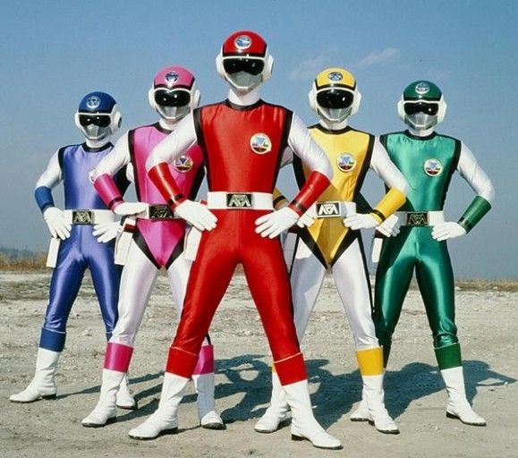

슈퍼전대 시리즈의 10번째 시리즈. 2차대전 전후 연간 일제의 패망 이후 중국을 비롯한 일본 제국 점령지에서 잔류한 일본인 고아 히키아게샤를 스토리의 모티브로 하여 '가족과 이별한 아픔'을 테마로 잡은 슈퍼전대다. 국내명은 대영팬더 더빙판에서는 지구방위대 후뢰시맨이다. 
일본에서는 전작 전격전대 체인지맨이 공전의 히트를 기록한 작품이었기 때문에 평가절하되는 면이 있으나, 방송 시간대가 토요일 오후였음에도 평균 12.3%, 최고 시청률 16.3%를 기록했다. 이는 평균 11.1%, 최고 16.1%을 기록한 전격전대 체인지맨보다 높았다. 다만 체인지맨의 그늘에 가렸다는 평가가 나오는 이유는, 체인지맨이 전작 초전자 바이오맨에 비해 최고 시청률을 2% 이상 끌어 올렸고, 평균 시청률도 바이오맨보다 높았으며, 완구 매출 역시 당시 슈퍼전대 시리즈 가운데 사상 최대액을 기록했기 때문이다. 또한 체인지맨은 그 높은 인기에 힘입어 55화까지[4] 방영되었으며, 슈퍼전대 시리즈의 본격적인 전성기를 열어준 작품이었기 때문에 플래시맨은 처음부터 대작의 후속편이라는 리스크를 안고 시작했다.